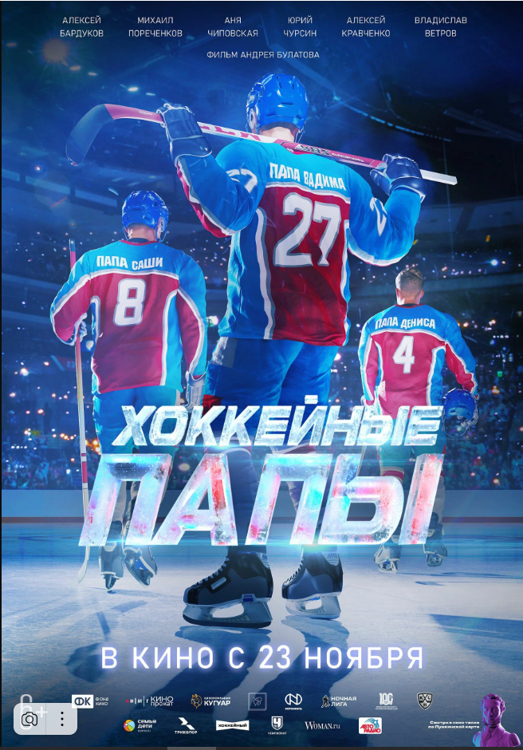

Приятно познакомиться!
Меня зовут Даша и мне 26 лет. У меня есть замечательная семья и маленький сын. Сейчас я нахожусь в декретном отпуске и, чтобы не сойти с ума, решила, что нужно постоянно чем-то себя занимать или отвлекать от домашней рутины. Люблю выпекать десерты - могу назвать это своим хобби. Лучше всего у меня получается выпекать тортики и французский десерт - макарон. Получаю эстетическое удовольсвие от процесса приготовления.
Почему именно web-разработка?
По образованию я - экономист, а точнее банковский работник. Три года проработав в банке, я поняла, что это скучновато для меня. Когда стал вопрос о выборе нового направления для изучения, я выбрала IT-сферу. Да, не буду скрывать, выбрала именно потому что все об этом говорили. Я прошла курсы ручного тестирования, но результата не получила. В моем окружении есть друзья, которые работают разработчиками в ит-компаниях и мне стало интресно: что это за профессия!
Книги или фильмы?
Скажу честно, книги я редко читаю, не потому что не люблю или не хочу, а потому что немногие книги могут меня заинтересовать. Больше предпочитаю жанры про психологию, либо книги, которые рассказывают историю, жизненный путь каких-либо знаменитостей. Что касается фильмов - все зависит от натсроения. Иногда хочется посмотреть что-то легкое, смешное и веселое. А порой наткнешься на какой-нибудь остросюжетный фильм и смотришь на одном дыхании.
Вот из последних:
